[arXiv'16] TensorFlow: Large-Scale Machine Learning on Heterogeneous Distributed Systems 阅读笔记
#0. 摘要
TensorFlow 是一种用于表达机器学习算法的接口, 以及一种用于执行这些算法的实现. 使用 TensorFlow 表达的计算可以在各种异构系统上以少量或无需修改的方式执行, 这些系统范围从手机和平板电脑等移动设备到由数百台机器和数千个计算设备 (如 GPU 卡) 组成的大规模分布式系统. 该系统具有高度的灵活性, 可用于表达各种算法, 包括深度神经网络模型的训练和推理算法, 并且已被用于在计算机科学和其他领域超过十几个领域进行研究和将机器学习系统部署到生产中, 包括语音识别、计算机视觉、机器人技术、信息检索、自然语言处理、地理信息提取和计算药物发现. 本文描述了 TensorFlow 接口以及我们在 Google 构建的该接口的实现.TensorFlow API 和参考实现2015 年 11 月作为 Apache 2.0 许可的开源软件包发布. 可在 <www.tensorflow.org> 上获取.
#1. 引言
谷歌大脑项目始于 2011 年, 旨在探索超大规模深度神经网络在研究和谷歌产品中的应用. 作为该项目早期工作的一部分, 我们构建了 DistBelief, 这是我们第一代可扩展的分布式训练和推理系统, 该系统为我们提供了良好的服务. 我和谷歌的其他研究人员使用 DistBelief 进行了广泛的研究, 包括无监督学习、语言表示、图像分类和目标检测模型、视频分类、语音识别、序列预测、围棋走法选择、行人检测、强化学习以及其他领域. 此外, 在谷歌大脑团队的紧密合作下, 谷歌及其他 Alphabet 公司的 50 多个团队已使用 DistBelief 在各种产品中部署了深度神经网络, 包括谷歌搜索、我们的广告产品、我们的语音识别系统、谷歌照片、谷歌地图和街景、谷歌翻译、YouTube 以及其他许多产品.
基于我们在 DistBelief 上的经验以及对训练和使用神经网络所需系统属性和要求的更全面理解, 我们构建了 TensorFlow, 这是我们用于大规模机器学习模型实现和部署的第二代系统. TensorFlow 将使用数据流模型描述的计算映射到各种不同的硬件平台上, 范围从在 Android 和 iOS 等移动设备平台上运行推理, 到使用包含一个或多个 GPU 卡的单机进行适度规模的训练和推理系统, 再到在包含数千个 GPU 的数百台专用机器上运行的大规模训练系统. 拥有一个能够覆盖如此广泛平台范围的单一系统, 可以显著简化机器学习系统的实际应用, 因为我们发现为大规模训练和小规模部署分别使用不同的系统会导致显著的维护负担和抽象泄漏问题. TensorFlow 计算以有状态数据流图的形式表示 (详见第 2 节), 我们专注于使系统既灵活, 能够快速实验新模型用于研究目的, 又具有足够的高性能和鲁棒性, 用于机器学习模型的训练和部署. 为了将神经网络训练扩展到更大的部署, TensorFlow 允许客户端通过复制和并行执行核心模型数据流图, 轻松表达各种并行性, 许多不同的计算设备协同合作来更新一组共享参数或其他状态. 计算描述的适度变化, 使得各种不同的并行性方法能够以较低的努力被实现和尝试. 一些 TensorFlow 的使用允许在参数更新的一致性方面有一定的灵活性, 我们可以在一些较大的部署中轻松表达和利用这些宽松的同步需求. 与 DistBelief 相比, TensorFlow 的编程模型更加灵活, 其性能显著更好, 并且它支持在更广泛的异构硬件平台上训练和使用更广泛的模型.
1 | import tensorflow as tf |
图 1: 示例 TensorFlow 代码片段
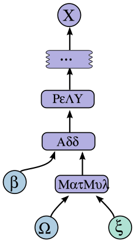
图 2: 图 1 对应的计算图
我们 DistBelief 的数十个内部客户已经切换到 TensorFlow. 这些客户依赖 TensorFlow 进行研究和生产, 任务多种多样, 从在手机上运行计算机视觉模型的推理, 到使用数百台机器在数百亿个示例记录上对具有数百亿参数的深度神经网络进行大规模训练. 尽管这些应用主要集中在机器学习和深度神经网络, 但预计 TensorFlow 的抽象化将在各种其他领域发挥作用, 包括其他类型的机器学习算法, 以及可能的其他类型的数值计算. 我们在 2015 年 11 月以 Apache 2.0 许可证开源了 TensorFlow API 和参考实现, 可在 <www.tensorflow.org> 获取.
本文的其余部分将更详细地介绍 TensorFlow. 第 2 节描述了 TensorFlow 接口的编程模型和基本概念, 第 3 节描述了我们的单机和分布式实现. 第 4 节描述了基本编程模型的几个扩展, 第 5 节描述了基本实现的几个优化. 第 6 节描述了我们使用 TensorFlow 的一些经验, 第 7 节描述了在使用 TensorFlow 时我们发现的几个有用的编程模式, 第 9 节描述了我们围绕核心 TensorFlow 系统构建的几个辅助工具. 第 10 节和第 11 节分别讨论了未来工作和相关工作, 第 12 节提供了总结性思考.
#2. 编程模型和基本概念
TensorFlow 计算由一个有向图描述, 该图由一组节点组成. 该图表示数据流计算, 并扩展了一些节点类型以维护和更新持久状态, 以及类似 Naiad 的方式在图中实现分支和循环控制结构. 客户端通常使用支持的前端语言 (C++ 或 Python) 构建计算图. 使用 Python 前端构建并执行 TensorFlow 图的示例片段如图 1 所示, 生成的计算图如图 2 所示.
在 TensorFlow 图中, 每个节点有零个或多个输入和零个或多个输出, 并代表一个操作的实例化. 沿着图中的正常边 (从输出到输入) 流动的值是张量, 即任意维度的数组, 其底层元素类型在图构建时指定或推断. 图中还可以存在一种特殊的边, 称为控制依赖关系: 数据不会沿着这种边流动, 但它们表示控制依赖关系的源节点必须完成执行, 然后控制依赖关系的目标节点才能开始执行. 由于我们的模型包含可变状态, 客户端可以直接使用控制依赖关系来强制 “happens before” 关系. 我们的实现有时也会插入控制依赖关系, 作为强制其他独立操作之间顺序的一种方式, 例如控制峰值内存使用.
#操作与内核
一个操作 (Operation) 具有名称, 表示一个抽象计算 (例如, “矩阵乘法"或"加法”). 操作可以具有属性, 所有属性必须在图构建时提供或推断, 以便实例化节点来执行该操作. 属性的一个常见用途是使操作在不同张量元素类型上具有多态性 (例如, “类型为 float 的两个张量的加法"与"类型为 int32 的两个张量的加法”).
内核 (Kernel) 是一个操作的特定实现, 可以在特定类型的设备上运行 (例如, CPU 或 GPU). TensorFlow 二进制文件通过注册机制定义可用的操作和内核集, 该集合可以通过链接额外的操作和/或内核定义/注册来扩展. 表 1 展示了 TensorFlow 核心库中内置的一些操作类型.
| Category | Examples |
|---|---|
| Element-wise mathematical operations | Add, Sub, Mul, Div, Exp, Log, Greater, Less, Equal, … |
| Array operations | Concat, Slice, Split, Constant, Rank, Shape, Shuffle, … |
| Matrix operations | MatMul, MatrixInverse, MatrixDeterminant, … |
| Stateful operations | Variable, Assign, AssignAdd, … |
| Neural-net building blocks | SoftMax, Sigmoid, ReLU, Convolution2D, MaxPool, … |
| Checkpointing operations | Save, Restore |
| Queue and synchronization operations | Enqueue, Dequeue, MutexAcquire, MutexRelease, … |
| Control flow operations | Merge, Switch, Enter, Leave, NextIteration |
#会话
客户端程序通过与 TensorFlow 系统创建 会话 (Session) 进行交互. 要创建计算图, 会话接口支持一个 Extend 方法, 用于向会话当前管理的图中添加额外的节点和边 (会话创建时的初始图是空的). 会话接口支持的主要操作之一是 Run, 它接受需要计算的一组输出名称, 以及一组可选的张量, 这些张量将"喂入"图中, 用以替代某些节点的输出. 通过 Run 的参数, TensorFlow 实现可以计算所有必须执行的节点的传递闭包, 以便计算请求的输出, 然后可以安排以尊重其依赖关系 (如 3.1 节中更详细所述) 的顺序执行相应的节点. 我们大多数使用 TensorFlow 的情况都是一次设置一个会话和一个图, 然后通过 Run 调用数千或数百万次执行整个图或几个不同的子图.
#变量
在大多数计算中, 图会被多次执行.大多数张量不会存活到图的单次执行之后. 然而, 变量 (Variable) 是一种特殊的操作, 它返回一个持久可变张量的句柄, 该张量会跨图执行而存活. 这些持久可变张量的句柄可以被传递给少数几个特殊操作, 例如 Assign 和 AssignAdd (相当于"+="), 这些操作会修改所引用的张量. 对于 TensorFlow 的机器学习应用, 模型的参数通常存储在变量中持有的张量里, 并在模型的训练图运行过程中被更新.
#3. 实现
TensorFlow 系统的主要组件包括:
- 客户端: 使用 Session 接口与主节点通信
- 主节点
- 一个或多个工作进程: 每个工作进程负责仲裁对一个或多个计算设备 (如 CPU 核心或 GPU 卡) 的访问, 并按照主节点的指令在这些设备上执行图节点.
TensorFlow 接口具有 本地 和 分布式 两种实现. 本地实现用于客户端、主节点和工作进程都在单个机器的同一操作系统进程上下文中运行的情况 (例如, 如果机器安装了多个 GPU 卡, 则可能具有多个设备). 分布式实现与本地实现共享大部分代码, 但扩展了其对客户端、主节点和工作进程可以分别位于不同机器上不同进程的环境的支持. 在我们的分布式环境中, 这些不同的任务是由集群调度系统管理的作业中的容器. 这两种不同的模式如图 3 所示. 本节其余部分主要讨论两种实现中共同存在的问题, 而第 3.3 节则讨论一些仅限于分布式实现的问题.
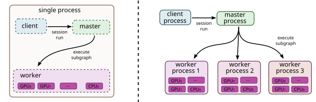
图 3: 单机与分布式系统架构
#设备
设备 (Device) 是 TensorFlow 的计算核心. 每个工作节点负责一个或多个设备, 每个设备具有设备类型和名称. 设备名称由识别设备类型、设备在工作节点中的索引以及在分布式设置中识别工作节点作业和任务的标识符 (对于本地设备的情况, 则为"localhost") 组成. 示例设备名称包括 /job:localhost/device:cpu:0 或 /job:worker/task:17/device:gpu:3. 我们为 CPU 和 GPU 提供了 Device 接口的实现, 其他设备类型的新的设备实现可以通过注册机制提供. 每个设备对象负责管理设备内存的分配和释放, 以及安排 TensorFlow 实现中由更高层次请求的任何内核的执行.
#张量
在我们的实现中, 张量 (Tensor) 是一个带类型的、多维数组. 我们支持多种张量元素类型, 包括 8 位到 64 位范围内的有符号和无符号整数、IEEE 浮点数和双精度类型、复数类型以及字符串类型 (任意字节数组). 张量适当大小的后端存储由特定于张量所在设备的分配器进行管理. 张量后端存储缓冲区采用引用计数, 当没有引用时会被释放.
#3.1 单设备执行
让我们首先考虑最简单的执行场景: 单个工作进程和单个设备. 图中的节点按照节点之间的依赖关系顺序执行. 具体来说, 我们跟踪每个节点尚未执行的依赖数量. 一旦该计数降为零, 该节点就具备执行资格, 并被添加到就绪队列中. 就绪队列以某种未指定的顺序进行处理, 将节点的内核执行委托给设备对象. 当一个节点执行完成后, 所有依赖于该已完成节点的节点的计数都会递减.
#3.2 多设备执行
当一个系统拥有多个设备时, 主要有两个复杂问题:
- 确定图中每个节点的计算应放置在哪个设备上
- 管理由这些放置决策所隐含的跨设备边界的数据通信需求
本小节将讨论这两个问题.
#3.2.1 节点放置
给定一个计算图, TensorFlow 实现的主要职责之一是将计算映射到可用设备集上. 这里给出了该算法的简化版本. 有关该算法支持的扩展, 请参阅第 4.3 节.
放置算法的一个输入是一个成本模型, 该模型包含每个图节点输入和输出张量的大小 (以字节为单位) 的估计值, 以及当节点接收到其输入张量时所需的计算时间的估计值. 这个成本模型要么基于与不同操作类型相关的启发式方法进行静态估计, 要么基于图先前执行的实际放置决策进行测量.
放置算法首先对图进行模拟执行. 模拟过程如下, 最终使用贪婪启发式方法为图中的每个节点选择设备. 该模拟生成的节点到设备的放置结果也用作实际执行的放置方案.
放置算法从计算图的源开始, 并在执行过程中模拟系统内每个设备上的活动. 对于在此遍历中到达的每个节点, 会考虑可行的设备集 (如果设备不提供实现特定操作的内核, 则该设备可能不可行). 对于具有多个可行设备的节点, 放置算法使用贪婪启发式算法, 该算法检查将节点放置在每个可能设备上对节点完成时间的影响. 该启发式算法考虑了成本模型中对该类型设备上操作的估计或测量执行时间, 并还包括为将输入从其他设备传输到考虑的设备而引入的任何通信成本. 选择节点操作最早完成的设备作为该操作的设备, 然后继续放置过程以对图中的其他节点做出放置决策, 包括现在准备好进行其模拟执行的下游节点. 第 4.3 节 描述了一些扩展, 允许用户提供提示和部分约束来指导放置算法. 放置算法是系统内持续发展的一个领域.
#3.2.2 跨设备通信
一旦节点放置计算完成, 图被划分为一组子图, 每个设备一个. 任何跨设备从 到 的边被移除, 并替换为从 到一个新的 Send 节点的边, 以及从相应的 Receive 节点到 的边. 见图 4, 示例此图转换.
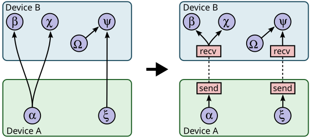
图 4: 插入发送/接收节点前与后
在运行时, 发送和接收节点的实现协调以跨设备传输数据. 这使得我们能够将所有通信隔离在发送和接收实现内部, 从而简化了其余的运行时.
当我们在其中插入发送 (Send) 和接收 (Receive) 节点时, 我们会将特定设备上某个张量的所有用户规范化为使用单个接收节点, 而不是在特定设备上为每个下游用户使用一个接收节点. 这确保了对于所需张量的数据, 在源设备和目标设备之间只传输一次, 并且目标设备上张量的内存只分配一次, 而不是多次 (例如, 参见图 4 中的节点 b 和 c).
通过这种方式处理通信, 我们还允许将图中各个节点的调度分散到工作节点中: 发送和接收节点在不同工作节点和设备之间提供必要的同步, 而主节点只需为每个包含图节点的每个工作节点发出一次运行请求, 而不是参与每个节点或跨设备通信的调度. 这使得系统更具可扩展性, 并且能够比强制由主节点进行调度时实现更细粒度的节点执行.
#3.3 分布式执行
图的分布式执行与多设备执行非常相似. 在设备放置之后, 每个设备都会创建一个子图. 跨工作进程通信的发送/接收节点对使用 TCP 或 RDMA 等远程通信机制来跨越机器边界传输数据.
#容错能力
分布式执行中的故障可以在多种位置被检测到. 我们主要依赖的检测方式有:
- 发送节点和接收节点之间通信的错误
- 主进程对每个工作进程进行的周期性健康检查.
当检测到故障时, 整个图执行会被中止并从头开始重新启动. 然而, 需要回忆的是, Variable 节点指向在图的不同执行中持续存在的张量. 我们支持在重启时对此状态进行一致的检查点保存和恢复. 具体来说, 每个 Variable 节点都连接到一个 Save 节点. 这些 Save 节点会周期性执行, 例如每 N 次迭代执行一次, 或每 N 秒执行一次. 当它们执行时, 变量的内容会被写入持久化存储, 例如分布式文件系统. 类似地, 每个 Variable 都连接到一个 Restore 节点, 该节点仅在重启后的第一次迭代中启用. 有关某些节点只能在某些图执行中启用的详细信息, 请参阅第 4.2 节.
#4. 扩展
在本节中, 我们描述了第 2 节介绍的基本编程模型的一些更高级的功能.
#4.1 梯度计算
许多优化算法, 包括随机梯度下降等常见的机器学习训练算法, 都会计算成本函数相对于一组输入的梯度. 由于这是一个非常常见的需求, TensorFlow 提供了内置的自动梯度计算支持. 如果在 TensorFlow 图中, 一个张量 依赖于一些张量 (可能通过一个复杂的子图操作), 那么有一个内置函数可以返回张量. 梯度张量的计算与其他张量类似, 通过扩展 TensorFlow 图, 并使用以下步骤进行计算.
当 TensorFlow 需要计算相对于某个依赖于 的张量 的梯度时, 它首先在计算图中找到从 到 的路径. 然后它从 回溯到, 对于反向路径上的每个操作, 它向 TensorFlow 图中添加一个节点, 使用链式法则沿着反向路径组合偏导数. 新添加的节点计算正向路径中相应操作的"梯度函数". 梯度函数可以由任何操作注册. 该函数不仅接收已经沿反向路径计算的偏导数作为输入, 还可以选择性地接收正向操作的输入和输出. 图 5 显示了从图 2 的示例计算出的成本的梯度. 灰色箭头显示了梯度函数的潜在输入, 这些输入未用于所显示的特定操作.计算这些梯度需要在图 1 中添加:
1 | [db,dW,dx] = tf.gradients(C, [b,W,x]) |
通常, 一个操作可能有多个输出, 而 可能仅依赖于其中的一部分. 例如, 如果操作 有两个输出 和, 而 仅依赖于, 那么 的梯度函数的第一个输入被设置为 0, 因为.
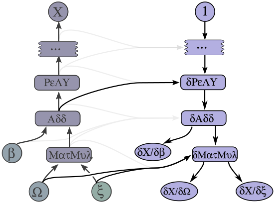
图 5: 图 2 中计算得到的梯度
自动梯度计算使优化过程复杂化, 尤其是内存使用方面. 在执行"前向"计算子图时, 即由用户显式构建的子图, 一个合理的启发式方法通过观察图构建的顺序来决定下一个要执行的节点, 从而打破平局. 这通常意味着临时输出在构建后很快被消耗, 因此其内存可以迅速重用. 当启发式方法无效时, 用户可以改变图构建的顺序, 或添加第 5 节中描述的控制依赖关系.
当自动向图中添加梯度节点时, 用户控制力减弱, 启发式方法可能失效. 特别是, 因为梯度会逆转前向计算顺序, 所以在图执行早期使用的张量在梯度计算接近结束时经常再次需要. 这些张量会占用大量稀缺的 GPU 内存, 并无意中限制计算规模. 我们正在积极研究内存管理的改进方法, 以更好地处理此类情况. 选项包括使用更复杂的启发式算法来确定图执行顺序, 重新计算张量而不是将它们保留在内存中, 以及将长期存在的张量从 GPU 内存中交换到更充裕的主机 CPU 内存中.
#4.2 部分执行
通常, 客户希望执行整个执行图中的子图. 为了支持这一点, 一旦客户端在会话中设置了一个计算图, 我们的 Run 方法允许他们执行整个图中的任意子图, 并在图的任何边上注入任意数据, 并检索沿图任何边流动的数据.
图中的每个节点都有一个名称, 节点的每个输出都由源节点名称和节点上的输出端口标识, 编号从 0 开始 (例如, "bar:0"指的是"bar"节点的第 1 个输出, 而"bar:1"指的是第 2 个输出).
Run 调用有两个参数, 有助于定义将要执行的计算图中的确切子图.
- inputs 参数, 这是一个可选的从
name:port -> feed的映射. - output_names 参数, 这是一个
name[:port]列表, 指示哪些节点应该被执行, 如果名称中包含端口部分, 则 Run 调用成功完成后, 应将对应节点的特定输出张量值返回给客户端.
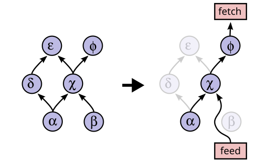
图 6: 部分执行前后的图转换
图根据输入和输出的值进行转换. 在输入中指定的每个 name:port 被替换为 feed 节点, 该节点将从用于 Run 调用的 Rendezvous 对象中特别初始化的条目中获取提供的输入张量. 类似地, 每个带有端口的输出名称连接到一个特殊的 fetch 节点, 该节点安排在 Run 调用完成后保存输出张量并将其返回给客户端. 最后, 一旦通过插入这些特殊的 feed 和 fetch 节点重写了图, 可以通过从任何输出命名的节点开始, 使用图依赖关系反向遍历图来确定要执行的节点集. 图 6 显示了左侧的原始图, 以及当 Run 被调用且 输入为 {b} 和 输出为 {f:0} 时产生的转换后的图. 由于我们只需要计算节点 f 的输出, 因此不会执行节点 d 和 e, 因为它们对 f 的输出没有贡献.
#4.3 设备约束
TensorFlow 客户端可以通过为节点提供部分约束来控制节点在设备上的放置位置, 这些约束规定了节点可以在哪些设备上执行. 例如, “仅将此节点放置在类型为 GPU 的设备上”, 或 “此节点可以放置在任何设备上 /job:worker/task:17”, 或 “将此节点与名为 variable13 的节点放置在一起”. 在这些约束的范围内, 放置算法负责选择节点分配到设备的方式, 以实现快速计算执行, 并满足设备自身施加的各种约束, 例如限制设备上执行其子图节点所需的内存总量.
支持这些约束需要对第 3.2.1 节中描述的放置算法进行修改. 我们首先计算每个节点的可行设备集, 然后使用并查集在邻接约束图上计算必须一起放置的图分量. 对于每个这样的分量, 我们计算可行设备集的交集. 每个节点计算出的可行设备集可以轻松地放入放置算法的模拟器中.
#4.4 控制流
尽管没有任何显式控制流的数据流图非常具有表达能力, 但我们观察到在支持条件语句和循环的情况下, 可以导致机器学习算法的表示更加简洁和高效.
与 Arvind 所描述的 dataflow-machine 方法类似, 我们将一组基本的控制流操作符引入 TensorFlow, 并将 TensorFlow 扩展为处理循环数据流图. Switch 和 Merge 操作符允许我们根据布尔张量的值跳过整个子图的执行. Enter、Leave 和 NextIteration 操作符使我们能够表达迭代. 高级编程结构, 如 if 条件语句和 while 循环, 可以轻松地使用这些控制流操作符编译成数据流图.
TensorFlow 运行时实现了一种与 MIT Tagged-Token machine 概念上相似的标签和帧机制. 循环的每次迭代都由一个标签唯一标识, 其执行状态由一个帧表示. 当输入变得可用时, 它可以进入迭代；因此, 多个迭代可以并发执行.
TensorFlow 使用分布式协调机制来执行具有控制流的图. 通常, 一个循环可以包含分配到许多不同设备的节点. 因此, 管理循环的状态成为一个分布式终止检测问题. TensorFlow 的解决方案基于图重写. 在图划分过程中, 我们自动向每个划分添加控制节点. 这些节点实现了一个小型状态机, 用于协调每次迭代的开始和终止, 并决定循环的终止. 对于每次迭代, 拥有循环终止谓词的设备向每个参与设备发送一个微小的控制消息.
如前所述, 我们通常通过梯度下降来训练机器学习模型, 并将梯度计算表示为数据流图的一部分. 当模型包含控制流操作时, 我们必须在相应的梯度计算中考虑它们. 例如, 具有 if 条件的模型的梯度计算需要知道条件分支中哪一条被选中, 然后将对梯度逻辑应用于该分支. 类似地, 具有 while 循环的模型的梯度计算需要知道进行了多少次迭代, 并且还需要依赖于在这些迭代过程中计算出的中间值. 基本技术是重写图, 以便记住梯度计算所需的值. 我们省略了这种编码的某些复杂细节.
#4.5 输入操作
尽管输入数据可以通过 feed 节点提供给计算, 但训练大规模机器学习模型的另一种常见机制是在图中使用特殊的输入操作节点, 这些节点通常配置有一组文件名, 每次执行时都会生成一个包含一个或多个来自该文件集存储数据的张量. 这允许数据直接从底层存储系统读取到将执行后续处理的数据的内存中. 在客户端进程与工作进程分离的配置中, 如果数据被传输, 通常需要额外的网络跳数 (从存储系统到客户端, 然后从客户端到工作进程, 而不是使用输入节点时直接从存储系统到工作进程).
#4.6 队列
队列是我们在 TensorFlow 中添加的一个有用功能. 它们允许图的不同部分异步执行, 可能以不同的频率, 并通过 Enqueue (入队) 和 Dequeue (出队) 操作传递数据. Enqueue 操作可以阻塞, 直到队列中有可用空间, 而 Dequeue 操作可以阻塞, 直到队列中有所需的最小元素数量. 队列的一个用途是允许输入数据在机器学习模型的计算部分仍在处理前一批数据时从磁盘文件中预取. 它们也可以用于其他类型的分组, 包括累积许多梯度以计算更大批次上更复杂的梯度组合, 或者将循环语言模型的不同输入句子分组到长度大致相同的句子组中, 然后可以更高效地处理.
除了普通的 FIFO 队列外, 我们还实现了一个洗牌队列, 它在一个大型的内存缓冲区中随机打乱其元素. 这种洗牌功能对于希望随机化处理示例顺序的机器学习算法非常有用.
#4.7 容器
容器 (Container) 是 TensorFlow 中用于管理更长时间存在的可变状态的一种机制. 变量的后端存储存在于容器中. 默认的容器是持续到进程终止的容器, 但我们也允许其他命名的容器. 容器可以通过完全清除其内容来重置. 使用容器, 即使在完全不相交的、与不同会话关联的计算图中, 也有可能共享状态.
#5. 优化
在本节中, 我们描述了 TensorFlow 实现中的一些优化措施, 这些措施能够提升系统性能或资源利用率.
- 公共子表达式消除
- 控制数据通信和内存使用
- 异步内核
- 高性能算子库
- 有损压缩
#6. 状态与经验
TensorFlow 接口和参考实现已在 Apache 2.0 许可证下开源, 该系统可在 <www.tensorflow.org> 下载. 该系统包括详细的文档、多个教程以及多个示例, 展示了如何使用该系统进行各种不同的机器学习任务. 这些示例包括从 MNIST 数据集 (机器学习算法的"hello world") 中分类手写数字、从 CIFAR-10 数据集中分类图像、使用循环 LSTM网络进行语言建模、训练词嵌入向量等.
该系统包括用于在 Python 和 C++中指定 TensorFlow 计算的接口, 我们预计随着时间的推移, 将根据内部 Google 用户和更广泛的开放源社区的需求添加其他接口.
我们在之前的 DistBelief 系统中拥有许多机器学习模型, 并将它们迁移到了 TensorFlow. 本节其余部分将讨论我们从这些迁移中学到的一些经验教训, 这些经验教训具有普遍适用性, 可以应用于任何将机器学习模型从一个系统迁移到另一个系统的过程, 因此可能对其他人也有价值.
特别是, 我们关注从移植一种用于图像识别的最先进的卷积神经网络 Inception中吸取的教训. 该图像识别系统将 224 × 224 像素图像分类为 1000 个标签之一 (例如, “猎豹”、"垃圾车"等). 当以 TensorFlow 图的形式表示时, 此类模型包含 1360 万个可学习参数和 36000 次操作. 在单个图像上运行推理需要 20 亿次乘加操作.
在 TensorFlow 中构建所有必要的数学运算后, 将 36,000 个运算组装并调试成正确的图结构被证明是一项具有挑战性的工作. 验证正确性是一项困难的任务, 因为系统本质上具有随机性, 并且仅在期望中以一种特定方式运行——可能需要数小时的计算时间. 在这种情况下, 我们发现将 Inception 模型移植到 TensorFlow 的以下策略至关重要:
- 构建工具以深入了解给定模型中参数的确切数量. 这些工具展示了复杂网络架构规范中的微妙缺陷. 特别是我们能够识别由于数学运算中自动广播导致维度上的实例化不正确的操作和变量.
- 从小处着手, 逐步扩展. 我们从前一系统移植的第一个卷积神经网络是一个在 CIFAR-10 数据集上使用的小型网络. 调试此类网络阐明了机器学习系统中单个操作 (例如, 最大池化) 中的微妙边缘情况, 在更复杂的模型中这些情况实际上几乎无法识别.
- 始终确保在关闭学习时, 机器学习系统中的目标 (损失函数) 保持一致. 将学习率设置为零帮助我们识别了模型中随机初始化变量时出现的意外行为. 在动态训练网络中, 此类错误将难以识别.
- 在调试分布式实现之前, 先在单机环境中进行匹配. 这一策略帮助我们界定了机器学习系统中训练性能的差异, 并进行了调试. 具体而言, 我们识别了由于竞态条件和错误地假设为原子操作的非原子操作所导致的错误.
- 防范数值错误.数值库在处理非有限浮点数方面存在不一致性. 卷积神经网络特别容易受到数值不稳定性影响, 在实验和调试阶段经常会表现出发散行为. 通过检查非有限浮点数来防范这种行为, 可以实时检测错误, 而不是事后识别发散行为.
- 分析网络中的各个部分并理解数值误差的幅度. 在两个机器学习系统上并行运行神经网络的子部分, 提供了一种精确的方法来确保数值算法在两个系统中保持一致. 鉴于这些算法以浮点精度运行, 预测和理解预期数值误差的幅度非常重要, 以便判断给定组件是否正确实现 (例如, 区分"在 1e-2 范围内, 很好!“和"在 1e-2 范围内: 为什么它如此不正确?!”).
在具有内在随机性的系统中验证复杂的数学运算极具挑战性. 上述策略在增强系统信心以及最终在 TensorFlow 中实现 Inception 模型方面被证明极具价值. 这些努力的结果使训练时间比我们现有的 DistBelief 模型实现提高了 6 倍, 这种速度提升在训练新一代更大规模的图像识别模型中被证明不可或缺.
#7. 常见编程模式
TensorFlow 的基本数据流图模型可以用于各种机器学习应用. 我们关注的领域之一是在大型数据集上加速计算密集型神经网络的训练. 本节介绍了我们和其他人开发的一些技术, 以实现这一目标, 并说明了如何使用 TensorFlow 来实现这些各种方法.
本小节中的方法假设模型正在使用随机梯度下降 (SGD) 进行训练, 并且使用相对较小的 mini-batch, 包含 100 到 1000 个示例.
#数据并行训练
一种简单的加速 SGD 的技术是将梯度计算并行化. 例如, 如果我们使用 1000 个元素的 mini-batch, 我们可以使用 10 个模型副本, 每个副本计算 100 个元素的梯度, 然后合并梯度并同步更新参数, 以表现得就像我们正在使用 1000 个元素的 mini-batch 运行顺序 SGD 算法一样. 在这种情况下, TensorFlow 图简单地包含执行模型计算大部分工作的图部分的多个副本, 单个客户端线程驱动这个大型图的整个训练循环. 这如图 7 的上半部分所示.
这种方法也可以实现异步处理, 其中 TensorFlow 计算图包含多个副本, 这些副本负责执行模型的主要计算部分, 并且每个副本都异步地将参数更新应用于模型参数. 在这种配置中, 每个计算图副本都有一个客户端线程. 这如图 7 的底部所示. 这种异步方法也在中进行了描述.
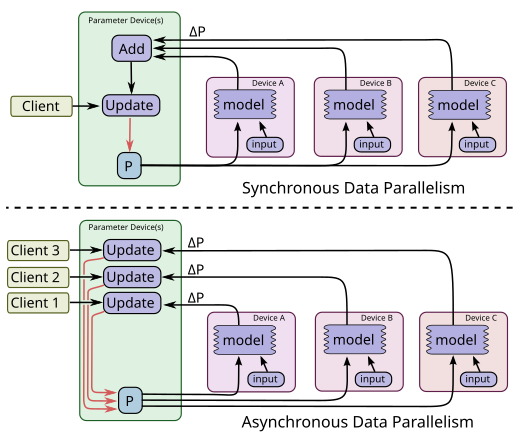
图 7: 数据并行训练: 同步 (上) 与异步 (下)
#模型并行训练
模型并行训练, 即将同一批示例的不同模型计算部分同时分配到不同的计算设备上进行, 在 TensorFlow 中也很容易实现. 图 8 展示了一个用于序列到序列学习的循环深度 LSTM 模型示例 (参见), 该模型在三个不同的设备上进行了并行化处理.
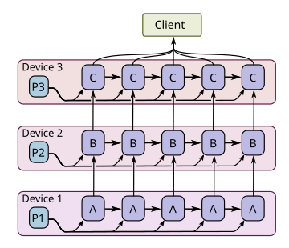
图 8: 模型并行训练
#模型计算流水线并行步骤
另一种提高深度神经网络训练利用率的方法是在同一设备内对模型计算进行流水线处理, 通过在同一设备集内运行少量并行步骤. 这如图 9 所示.它与异步数据并行性有些相似, 但并行性发生在同一设备 (或设备组) 内部, 而不是在不同的设备上复制计算图. 这允许"填补空白", 即在一个步骤中, 单个批次的计算可能无法在任何时候完全利用所有设备的全部并行性.
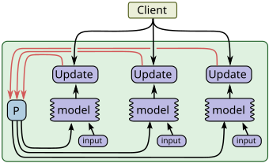
图 9: 并发步骤
#8. 性能
白皮书版本无完整的性能评估.
#9. 工具
本节介绍了一些我们开发并与核心 TensorFlow 图执行引擎并存的工具.
#9.1 TensorBoard: 图结构和摘要统计的可视化
为了帮助用户理解其计算图的结构, 以及理解机器学习模型的整体行为, 我们构建了 TensorBoard, 这是一个包含在开源发布中的 TensorFlow 配套可视化工具.
#计算图的可视化
深度神经网络中的许多计算图可能非常复杂. 例如, 用于训练与 Google 的 Inception 模型类似模型的计算图——该模型是一种深度卷积神经网络, 在 ImageNet 2014 竞赛中取得了最佳分类性能——其 TensorFlow 计算图包含超过 36,000 个节点, 而一些用于语言模型的深度循环 LSTM 模型则包含超过 15,000 个节点.
由于这些图的规模和拓扑结构, 传统的可视化技术往往会产生杂乱且令人不知所措的图表. 为了帮助用户看清图的基本组织结构, TensorBoard 中的算法将节点合并为高级模块, 突出显示具有相同结构的组. 系统还将具有高连接度的节点 (这些节点通常用于记账功能) 分离到屏幕的单独区域. 这样做减少了视觉上的杂乱, 使注意力集中在计算图的核心部分.
整个可视化是交互式的: 用户可以平移、缩放并展开分组节点以深入查看详细信息. 深度卷积图像模型的图的可视化示例如图 10 所示.
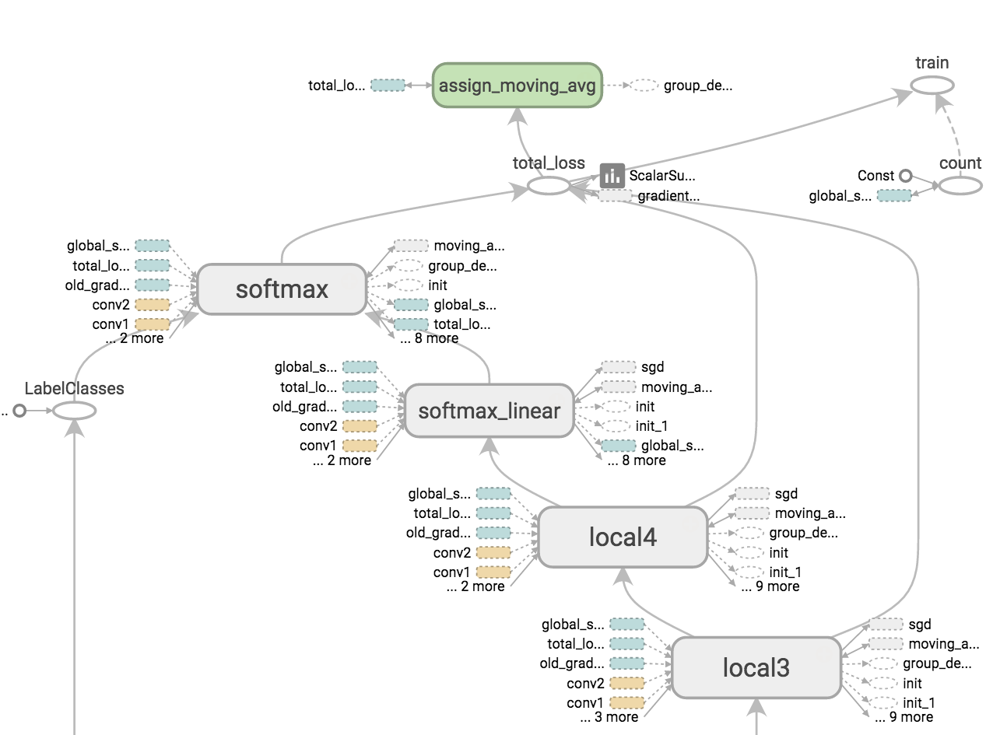
图 10: 卷积神经网络模型的 TensorBoard 图可视化
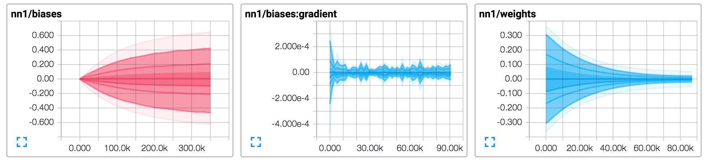
图 11: TensorBoard 模型摘要统计时间序列数据的图形显示
#摘要数据的可视化
在训练机器学习模型时, 用户通常希望能够检查模型各个方面的状态, 以及这些状态随时间的变化情况. 为此, TensorFlow 支持将一系列不同的摘要操作插入图中, 包括标量摘要 (例如, 用于检查模型的整体属性, 如跨多个样本的损失函数平均值, 或执行计算图所需的时间)、基于直方图的摘要 (例如, 神经网络层中权重值的分布), 或基于图像的摘要 (例如, 卷积神经网络中学习到的滤波器权重的可视化). 通常, 计算图会设置摘要节点以监控各种有趣的值, 在执行训练图的过程中, 除了执行正常节点集之外, 摘要节点集也会被定期执行, 客户端驱动程序将摘要数据写入与模型训练相关的日志文件. TensorBoard 程序随后被配置为监视此日志文件以获取新的摘要记录, 并能够显示此摘要信息及其随时间的变化 (具有选择"时间"测量的能力, 可以是 TensorFlow 程序执行开始以来的相对墙上时间、绝对时间或"步骤", 即自 TensorFlow 程序执行开始以来发生的图执行次数的数值度量). TensorBoard 中摘要值可视化的屏幕截图如图 11 所示.
#9.2 性能跟踪
我们还有一个内部工具, 称为 EEG (未包含在 2015 年 11 月的初始开源发布中), 用于收集和可视化关于 TensorFlow 图执行的确切顺序和性能特征的非常细粒度信息. 该工具适用于我们的单机和分布式实现, 对于理解 TensorFlow 程序的计算和通信模式中的瓶颈非常有用.
系统中的每台机器同时从多种来源收集跟踪信息, 包括 Linux 内核 ftrace、我们自己的轻量级线程跟踪工具以及 CUDA Profiling Tools Interface (CUPTI). 通过这些日志, 我们可以以微秒级的细节重建分布式训练步骤的执行过程, 包括每个线程切换、CUDA 内核启动和 DMA 操作.
跟踪信息在可视化服务器中组合, 该服务器设计用于快速提取指定时间范围内的事件, 并以适当的详细程度为用户界面分辨率进行总结. 由于通信、同步或 DMA 相关停滞引起的任何显著延迟都会被识别并用箭头在可视化中突出显示. 最初, 用户界面提供整个跟踪的概览, 仅突出显示最重要的性能伪影. 随着用户逐步放大, 越来越精细的分辨率细节将被渲染.
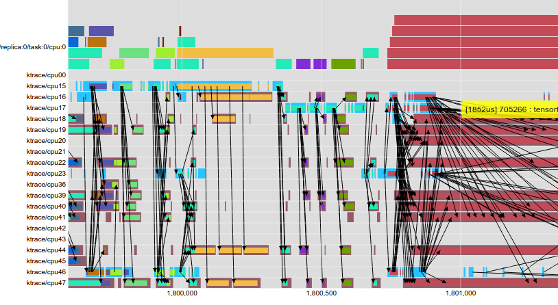
图 12: 多线程 CPU 操作的 EEG 可视化 (x 轴为 us 的时间).
图 12 展示了一个在多核 CPU 平台上训练模型的 EEG 可视化示例. 屏幕截图的上三分之一显示了根据数据流约束并行调度的 TensorFlow 操作. 追踪记录的底部部分展示了大多数操作如何被分解为多个工作项, 这些工作项在线程池中并发执行. 右侧的对角箭头显示了线程池中队列延迟的累积位置.
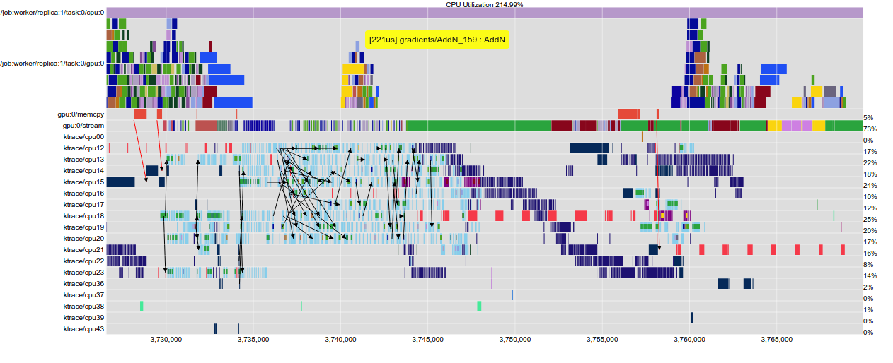
图 13: Inception 训练的 EEG 可视化, 显示 CPU 和 GPU 活动.
图 13 展示了另一种 EEG 可视化, 计算主要在 GPU 上进行. 可以看到主机线程正在将可运行的 TensorFlow GPU 操作入队 (浅蓝色线程池), 而背景维护线程以其他颜色显示在处理器核心之间迁移. 再次, 箭头指示线程在 GPU 到 CPU 传输中停滞的位置, 或操作经历显著排队延迟的位置.
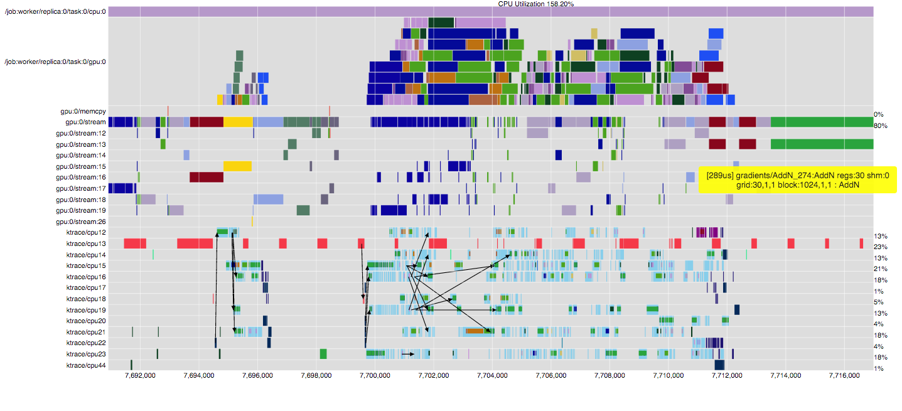
图 14: 多流 GPU 执行的时间线.
最后, 图 14 展示了一个更详细的视图, 使我们能够考察 Tensorflow GPU 算子如何分配到多个 GPU 流. 每当数据流图允许并行执行或数据传输时, 我们都会努力使用流和流依赖原语向 GPU 设备暴露顺序约束.
#10. 未来工作
我们未来工作有几个不同的方向. 我们将继续使用 TensorFlow 开发新的、有趣的机器学习模型用于人工智能, 在这个过程中, 我们可能会发现需要扩展基本 TensorFlow 系统的途径. 开源社区也可能为 TensorFlow 实现提出新的、有趣的方向.
我们正在考虑的基本编程模型的一个扩展是一个函数机制, 用户可以指定 TensorFlow 计算的一个子图作为一个可重用的组件. 在我们设计的实现中, 这些函数甚至可以在不同的 TensorFlow 前端语言之间成为可重用的组件, 以便用户可以使用 Python 前端定义一个函数, 但然后可以使用该函数作为 C++前端的基本构建块. 我们希望这种跨语言的可重用性将启动一个充满活力的机器学习研究人员社区, 他们不仅发布他们研究的完整示例, 还发布他们工作中的小型可重用组件, 这些组件可以在其他环境中重用.
我们还有许多具体的方向来提升 TensorFlow 的性能. 其中一个方向是我们对即时编译器 (just-in-time compiler) 的初步研究, 该编译器可以取 TensorFlow 执行的一个子图, 可能包含一些关于张量典型大小和形状的运行时分析信息, 并为此子图生成优化的例程. 这个编译器将理解执行语义, 并执行多种优化, 如循环融合 (loop fusion)、分块 (blocking) 和分片 (tiling) 以提升局部性、针对特定形状和大小的特化 (specialization) 等.
我们同样设想, 未来工作的一个重要领域将在于改进用于决定不同节点将执行位置以及它们应何时开始执行的放置和节点调度算法. 目前, 我们在这些子系统中已实现了一些启发式方法, 我们希望系统能够学习做出良好的放置决策 (或许使用深度神经网络, 结合强化学习目标函数).
#11. 相关工作
存在许多其他系统, 在各个方面与 TensorFlow 具有可比性. Theano 、Torch 、Caffe 、Chainer 以及 Computational Network Toolkit 是几个主要设计用于神经网络训练的系统. 这些系统中的每一个都将计算映射到单台机器上, 与分布式 TensorFlow 实现不同. 与 Theano 和 Chainer 类似, TensorFlow 支持符号微分, 从而更容易定义和操作基于梯度的优化算法. 与 Caffe 类似, TensorFlow 的核心是用 C++编写的, 简化了在多种生产环境中部署训练模型的任务, 包括内存和计算受限的环境, 如移动设备.
TensorFlow 系统与其前身系统 DistBelief以及具有相似设计的后续系统 (如 Project Adam和 Parameter Server 项目) 在一些设计特征上有所相似. 与 DistBelief 和 Project Adam 类似, TensorFlow 允许计算分散到多台机器的多个计算设备上, 并允许用户使用相对高级的描述来指定机器学习模型. 然而, 与 DistBelief 和 Project Adam 不同, TensorFlow 中的通用数据流图模型更加灵活, 更易于表达更广泛的机器学习模型和优化算法. 它还通过允许将状态参数节点表示为变量, 以及将变量更新操作作为图中的附加节点, 实现了显著的简化；相比之下, DistBelief、Project Adam 和 Parameter Server 系统都拥有完全独立的参数服务器子系统, 专门用于参数值的通信和更新.
Halide 系统用于表达图像处理流程, 其采用与 TensorFlow 数据流图相似的中间表示. 然而, 与 TensorFlow 不同, Halide 系统实际上对其操作的语义有更高级别的理解, 并利用这种知识生成高度优化的代码片段, 这些代码片段结合了多个操作, 同时考虑了并行性和局部性. Halide 仅在单机上运行生成的计算, 而非分布式环境. 在未来的工作中, 我们希望扩展 TensorFlow, 加入类似的跨操作动态编译框架.
与 TensorFlow 类似, 已有多个分布式系统被开发用于在集群中执行数据流图. Dryad 和 Flume 展示了如何将复杂的工作流表示为数据流图. CIEL 和 Naiad 引入了针对数据依赖控制流的一般性支持: CIEL 将迭代表示为动态展开的有向无环图 (DAG), 而 Naiad 使用带有循环的静态图来支持低延迟迭代. Spark 针对反复访问相同数据的计算进行了优化, 使用"弹性分布式数据集" (RDDs), 这些是早期计算结果的软状态缓存输出. Dandelion 在异构设备集群 (包括 GPU) 上执行数据流图. TensorFlow 采用了一种混合数据流模型, 借鉴了这些系统的各个元素. 其数据流调度器 (即选择下一个执行节点的组件) 使用与 Dryad、Flume、CIEL 和 Spark 相同的基本算法. 其分布式架构与 Naiad 最为接近, 因为该系统使用单个优化的数据流图来表示整个计算, 并在每个设备上缓存该图的信息以最小化协调开销. 与 Spark 和 Naiad 类似, 当集群中有足够的 RAM 来存储计算的工作集时, TensorFlow 表现最佳. TensorFlow 中的迭代采用混合方法: 同一数据流图的多个副本可能同时执行, 同时共享同一组变量. 副本可以通过变量异步共享数据, 或使用图中的同步机制 (如队列) 进行同步操作. TensorFlow 还支持图内的迭代, 这是一种 CIEL 和 Naiad 的混合: 为简化起见, 每个节点仅在其所有输入都准备好时才触发 (类似于 CIEL) ；但为提高效率, 图被表示为静态循环数据流 (类似于 Naiad).
#12. 结论
我们描述了 TensorFlow, 这是一个基于数据流的灵活编程模型, 以及该编程模型在单机和分布式系统中的实现. 该系统源于我们在谷歌产品和服务中广泛开展研究和部署超过一百个机器学习项目中的实际经验. 我们开源了一个版本的 TensorFlow, 并希望围绕 TensorFlow 的使用形成一个充满活力的共享社区. 我们很兴奋地看到谷歌以外的人们如何在他们的工作中使用 TensorFlow.
#参考资料
- TensorFlow 详解 - 张雨石
寻找合适设备是TF系统区分与之前很多系统的地方，之前的系统比如Parameter Server，是参数分离出来，运算在一起，同时使用数据切分来达到分布式。而TF是把每个op都映射到某个机器上，意味着每个op可能在不同的机器上，这是对系统的进一步剖离，因而可以达到更高的可扩展性。我个人觉得这是TF区分与Parameter Server的一个大区别，对于TF来说，计算节点是分离的，参数也是分离的，因而其PS也是分离的。每个设备上可能分配了计算节点，然后其对应的ps也在该设备上。因而，传统的PS中，计算和参数是分开的，但计算和参数他们分别是在一起的；而TF中，计算本身是分离的，参数也是分离的，而计算和参数是在一起的。